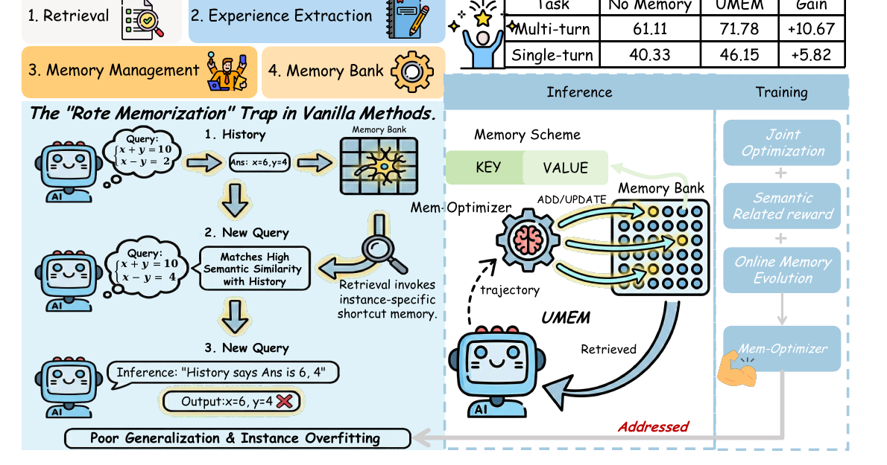
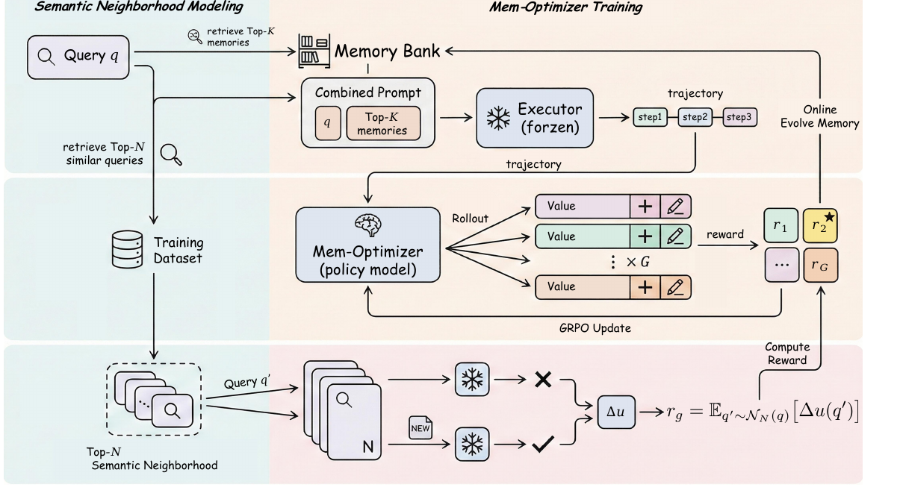

UMem 深度解读
UMem 关注的是自演化 agent 的记忆如何从经验中泛化。它把 memory extraction 和 memory management 统一成一个可训练的 Mem-Optimizer，并用语义邻域内的边际收益来避免实例噪声。
1. 设计思路：从“记住样本”到“沉淀可迁移经验”
传统 memory pipeline 往往先检索，再从当前轨迹里抽取一条记忆并塞进库里。UMem 认为这会落入 rote memorization trap：模型保存了实例快捷方式，下一次遇到相似但不相同的问题时反而被误导。

论文 Figure 1：左侧展示 vanilla 方法如何把实例特异答案当成记忆，右侧展示 UMem 用可学习 Mem-Optimizer 联合优化抽取与管理。
2. 论文原图框架：Figure 2 的训练闭环

论文 Figure 2：左侧是 Semantic Neighborhood Modeling，右侧是 Mem-Optimizer 训练、rollout、reward 计算和在线记忆演化。
3. 形式化：冻结执行器，训练记忆优化器
论文把 self-evolving agent 写成两部分：冻结 executor \(E\) 负责执行任务，外部 memory bank \(B\) 是可演化的非参数状态，Mem-Optimizer \(\pi_\phi\) 负责从轨迹中提炼并应用记忆更新。
tau_q, y_hat_q = E(q, B_topk; Theta_0)a_q = (Delta_q, opt_q) ~ pi_phi(. | q, tau_q, y_hat_q), B_{t+1} = Apply(B_t, a_q)Extraction 不是固定 prompt
Delta_q 是被训练出来的记忆内容，目标是从轨迹里蒸馏“可复用原则”。
Management 不是孤立规则
opt_q 决定 ADD/UPDATE 等操作，但它必须与抽取出的内容联合优化。
4. Algorithm 1：两阶段训练逻辑
对每个 query，从语料 D 中找 N 个最近邻 query，形成 NN(q)。这一步为后续泛化奖励提供评价集合。
冻结 executor 使用当前 memory bank 生成轨迹 tau_q 和预测结果。
对同一状态采样 G 个 memory update action，形成 GRPO 所需的候选组。
把候选 action 应用到 bank 后，计算它对 NN(q) 中每个邻居任务的效用变化，再聚合成奖励。
用组内相对优势更新 Mem-Optimizer，同时让 memory bank 在训练中持续演化。
5. 实验怎么读：UMem 赢在“泛化记忆质量”
| 证据 | 论文报告 | 含义 |
|---|---|---|
| Figure 1 示例任务 | Multi-turn 从 61.11 到 71.78，gain +10.67；Single-turn 从 40.33 到 46.15，gain +5.82。 | 提升来自更好的记忆演化，而不是 executor 参数变化。 |
| 五个 benchmark | AIME、GPQA Diamond、HLE、HotpotQA、ALFWorld。 | 论文覆盖推理、问答和交互环境，意图证明不是单一 QA 模板。 |
| Table 1 | 论文称 UMEM 在大多数设置上超过 ReMem、Memp 等基线；UMEM-Qwen3-4B + GPT-5.1 在 ALFWorld 达到 82.84% success rate。 | 强 executor 提供更高质量轨迹，Mem-Optimizer 更容易抽到有效 insight。 |
| Table 2 | N=3 的语义邻域大小表现最好；N=1 和 N=5 都下降。 | 邻域奖励必须在“足够相似”和“足够多样”之间平衡。 |
6. 工程启发与边界
适用
需要从反复交互中沉淀策略、经验和解题原则的 agent，比如数学推理、网页/环境交互和长期任务助手。
边界
论文没有声称已经提供生产级用户记忆治理，也没有把代码/模型“将公开”写成“已经开源”。
来源与核验边界
本页依据 arXiv:2602.10652 整理。代码与模型状态按论文原文表述为 will be publicly released，未写成已发布事实。